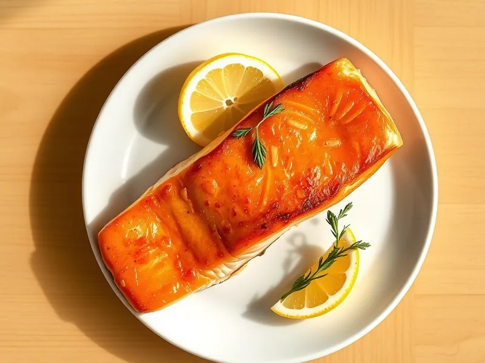

Стейк сёмги на сковороде
Сочный стейк сёмги с румяной корочкой и лимоном за 15 минут
15 мин2 порц.530 ккал на порциюБ 40 · Ж 37 · У 2Европейская кухня
Открыть в приложении: порции, таймеры, список покупок
Продукты на 2 порц.
- Сёмга / лосось2 шт
- Оливковое масло2 ч. л.
- Сливочное масло15 г
- Чеснок1 зуб.
- Лимон0,5 шт
- Сушёные травы по желанию2 щеп.
- Соль2 щеп.
- Перец чёрный молотый2 щеп.
Как готовить
- Промокните стейки бумажным полотенцем, посолите и поперчите с обеих сторон.
- Разогрейте оливковое масло на сковороде на сильном огне и выложите стейки. Жарьте 3-4 минуты, не двигая, до золотистой корочки.
- Переверните, убавьте огонь до среднего, добавьте сливочное масло и раздавленный чеснок.
- Жарьте ещё 3-4 минуты, поливая рыбу маслом ложкой. Готова, когда мясо посветлело до центра и легко отходит от кости.
- Полейте соком лимона и сразу подавайте.
Совет. Не переворачивайте стейк раньше времени: корочка схватится, и он сам легко отойдёт от сковороды.